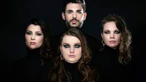

Eirovīzija
Eirovīzijas dziesmu konkurss, tiek saukta arī par Eirovīziju, ir ikgadējs konkurss, kurā piedalās dalībnieki no Eiropas Raidorganizāciju apvienības valstīm. Katras valsts pārstāvis televīzijas tiešraidē izpilda vienu dziesmu un pēc visu dziesmu izskanēšanas pārējās valstis balso par viņiem vistīkamāko dziesmu.
Šī gada dalībnieki:
Albānija
Ronela Hajati ar dziesmu "Sekret"
Armēnija
Rosa Linn ar dziesmu "Snap"
Austrālija
Sheldon Riley ar dziesmu "Not The Same"
Austrija
LUM!X feat. Pia Maria ar dziesmu "Halo"
Azerbaidžāna
Nadir Rustamli ar dziesmu "Fade To Black"
Beļģija
Jérémie Makiese ar dziesmu "Miss You"
Bulgārija
Intelligent Music Project ar dziesmu "Intention"
Kroātija
Mia Dimšić ar dziesmu "Guilty Pleasure"
Kipra
Andromache ar dziesmu "Ela"
Čehija
We Are Domi ar dziesmu "Lights Off"
Dānija
REDDI ar dziesmu "The Show"
Igaunija
Stefan ar dziesmu "Hope"
Somija
The Rasmus ar dziesmu "Jezebel"
Francija
Alvan & Ahez ar dziesmu "Fulenn"
Džordžija
Circus Mircus ar dziesmu "Lock Me In"
Vācija

Malik Harris ar dziesmu "Rockstars"